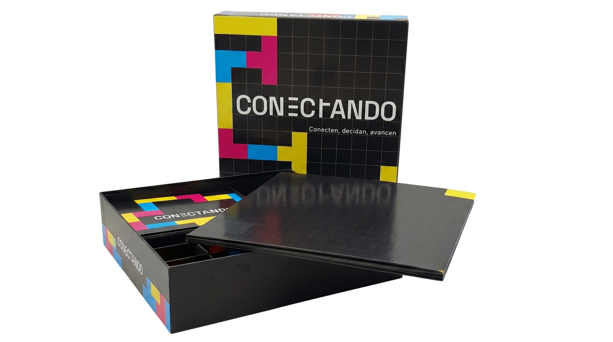

Galería




Re-edición digital interactiva.
Taller de Diseño de Interacción
Annelys Mendez Feliz · 2026
Fundamento
Conectando es, en su origen, un juego de mesa estratégico y colaborativo donde dos duplas se enfrentan en un tablero cuadriculado, el desafío es ser el primer equipo en construir un camino continuo desde el centro hasta una salida.
En cada turno, los jugadores deben conversar, tomar decisiones, elegir la pieza adecuada y conectarla al camino existente, las partidas mutan constantemente, y los retos generan recorridos dinámicos e impredecibles.
Este proyecto corresponde a una re-edición digital del juego, lejos de intentar replicar la estructura, reglas o componentes físicos de manera literal, la propuesta busca reinterpretar sus pilares esenciales como la conexión, colaboración, comunicación y construcción a través del lenguaje interactivo web.
El hilo conductor y el argumento principal que rige todo el diseño de este proyecto es la incertidumbre.
La incertidumbre se manifiesta desde el primer segundo en la interfaz de esta página, el entorno web no entrega la información de forma pasiva, sino que exige la curiosidad del usuario, la página actual como un tablero vivo donde el recorrido se va revelando paso a paso.
A partir del análisis del juego físico se abstrajeron tres acciones vitales: Transforma, Decide y Avanza, estos conceptos son la segunda parte del proyecto, un ecosistema digital interactivo donde la incertidumbre se vive en tiempo real.
En conjunto, Conectando Digital mantiene un vínculo conceptual con el juego original, logrando que el usuario no solo lea sobre el proyecto, sino que experimente la adrenalina, la adaptación y el misterio de no saber a dónde lo llevará su próxima conexión.
Conceptos
Galería

Partitura de interacción